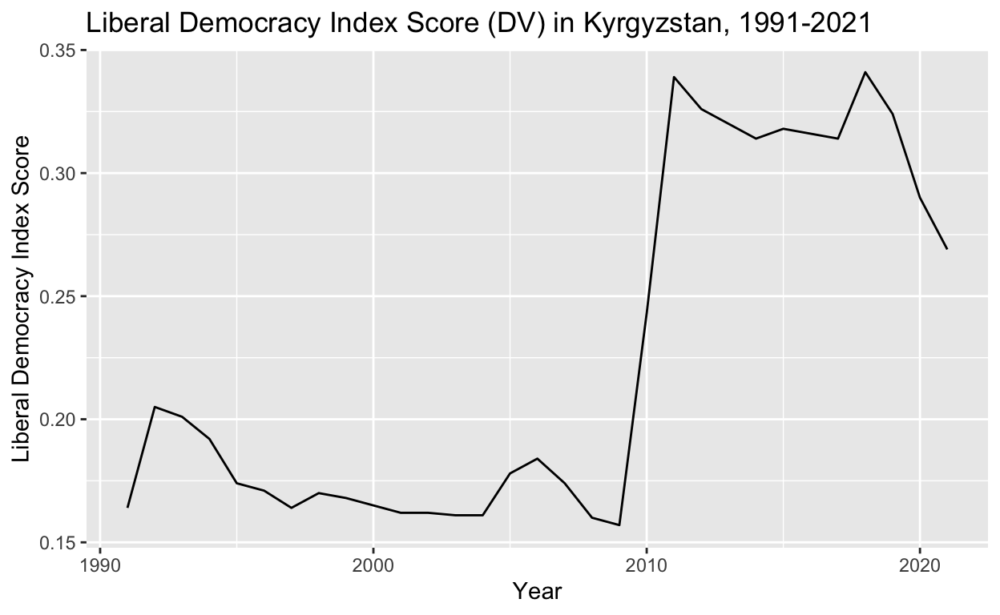
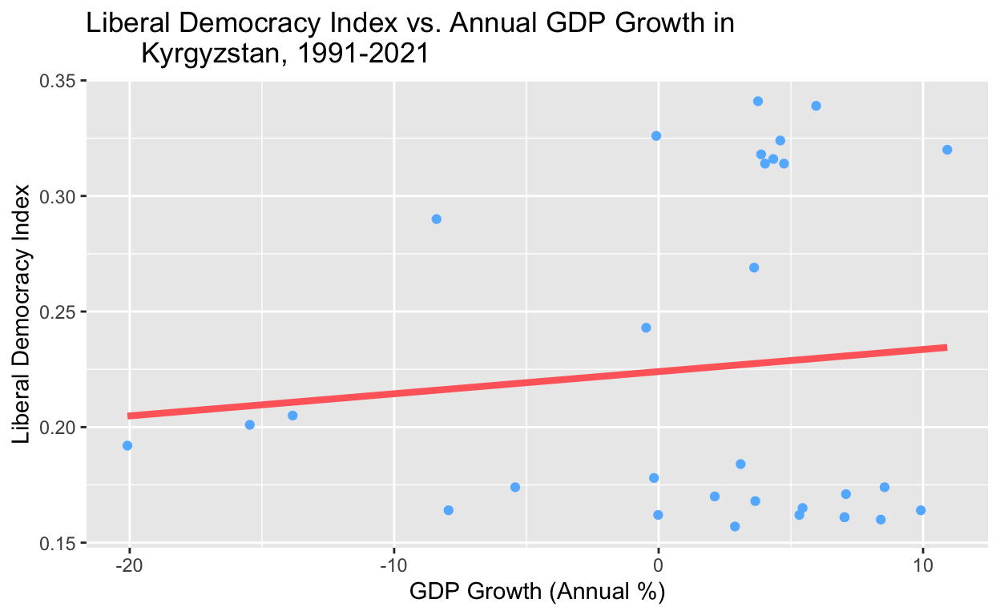

Does GDP growth facilitate democratization? In this study, I plan to examine the extent to which GDP growth begets democratic progress. I hypothesize that GDP growth allows democratic progress to occur through factors such as increased governmental capacity, heightened foreign investment, strengthened economic and political institutions, and a more stable middle class.
(1) An introduction where you introduce the research question and hypothesis and briefly describe why it is interesting
Does GDP growth facilitate democratization? In this study, I plan to examine the extent to which GDP growth begets democratic progress. I hypothesize that GDP growth allows democratic progress to occur through factors such as increased governmental capacity, heightened foreign investment, strengthened economic and political institutions, and a more stable middle class. My explanatory variable of interest is the Kyrgyz GDP growth rate from its founding in 1991 to present, according to World Bank data. My outcome variable is the state of liberal democracy in Kyrgyzstan in each associated year, given by VDem data capturing Kyrgyzstan’s annual Liberal Democracy Index (LDI). The LDI is measured on a scale from 0 to 1, and is an aggregate rating of a country’s electoral democracy levels, civil liberty protections, degrees of legal and judicial independence, and governance accountability mechanisms. If I observe greater scores on the LDI in periods of Kyrgyz economic growth, this would support my hypothesis that GDP growth is positively associated with democratic hprogress; on the other hand, if LDI scores were to drop during periods of economic growth, this evidence would contradict my hypothesis. When I ultimately run my regression, I would need a positive, statistically significant coefficient to corroborate my hypothesis.
(2) A data section that briefly describes the data source, describes how the key dependent and independent variables are measured (e.g., a survey, statistical model, or expert coding), and also produces a plot that summarizes the dependent variable; note if your research design is cross-sectional (most projects will be of this type) or one of the other designs we discussed (randomized experiment, before-and-after, differences-in-differences).
#Visualization of GDP growth (independent variable) over time
gdp_growth_graph <-
ggplot(data = kyrgyz,
mapping = aes(x = `Year`,
y = `GDP Growth (Annual %)`)) +
geom_line() +
labs(x = "Year",
y = "GDP Growth (Annual %)",
title = "Annual GDP Growth (IV) in Kyrgyzstan, 1991-2021")
gdp_growth_graph#Visualization of LDI (dependent variable) over time
ldi_graph <-
ggplot(data = kyrgyz,
mapping = aes(x = `Year`,
y = `Liberal Democracy Index`)) +
geom_line() +
labs(x = "Year",
y = "Liberal Democracy Index Score",
title = "Liberal Democracy Index Score (DV) in Kyrgyzstan, 1991-2021")
ldi_graph
Data Sources
In this project, my key independent variable is contained in World Bank data that provides Kyrgyzstan’s annual GDP growth rate for the years 1991-2021. These figures are drawn from the World Bank’s and OECD’s national accounts data.
My key dependent variable is contained in VDem data that displays Kyrgyzstan’s annual Liberal Democracy Index (LDI) score from 1991-2021. The LDI is measured on a scale from 0 to 1 (1 indicating the maximally democratic index score), and is an aggregate rating of a country’s electoral democracy levels, civil liberty protections, degrees of legal and judicial independence, and governance accountability mechanisms.
For my additional regressions: Firstly, World Bank data also provides Kyrgyzstan’s Gini coefficient each year between 1991-2021 as a measure of wealth inequality in the country (wherein a Gini coefficient of 0 would indicate complete income equality, and a Gini coefficient of 1 would indicate maximal income inequality). Secondly, VDem’s mass mobilization index measures the “mobilization of citizens for mass events such as demonstrations, strikes and sit-ins.” It is measured annually on a scale from 0 to 4, with 0 indicating that effectively no mobilization occurred that year and 4 indicating that myriad demonstrations of varying sizes took place. Finally, the U.S. government also provides data about yearly U.S. assistance sent to Kyrgyzstan between 1991-2021. This is measured in inflation-adjusted dollars.
Furthermore, the research design of my observational study is a panel study, as I am looking at my outcome of interest (Kyrgyzstan’s LDI) at multiple different points over time.
(3) A results section that contains a scatterplot, barplot, or boxplot of the main relationship of interest and output for the main regression of interest; interpret (in plain English) the main coefficient of interest in your regression. You should also comment on the statistical significance of the estimated coefficient and whether or not you believe the coefficient to represent a causal effect.
Regression: LDI vs Annual GDP Growthregression <- lm(`Liberal Democracy Index` ~ `GDP Growth (Annual %)`,
data = kyrgyz)
regression
Call:
lm(formula = `Liberal Democracy Index` ~ `GDP Growth (Annual %)`,
data = kyrgyz)
Coefficients:
(Intercept) `GDP Growth (Annual %)`
0.2240133 0.0009581 #Coefficients and Intercepts
summary(regression)
Call:
lm(formula = `Liberal Democracy Index` ~ `GDP Growth (Annual %)`,
data = kyrgyz)
Residuals:
Min 1Q Median 3Q Max
-0.07206 -0.06090 -0.04299 0.08549 0.11339
Coefficients:
Estimate Std. Error t value Pr(>|t|)
(Intercept) 0.2240133 0.0131379 17.051 <2e-16 ***
`GDP Growth (Annual %)` 0.0009581 0.0017450 0.549 0.587
---
Signif. codes: 0 '***' 0.001 '**' 0.01 '*' 0.05 '.' 0.1 ' ' 1
Residual standard error: 0.07181 on 29 degrees of freedom
Multiple R-squared: 0.01029, Adjusted R-squared: -0.02384
F-statistic: 0.3015 on 1 and 29 DF, p-value: 0.5872| term | estimate | p.value |
|---|---|---|
| (Intercept) | 0.224 | 0.000 |
GDP Growth (Annual %) |
0.001 | 0.587 |
#Graphing Regression
ggplot(regression, aes(x = `GDP Growth (Annual %)`,
y = `Liberal Democracy Index`)) +
geom_point(color = "steelblue1") +
labs(x = "GDP Growth (Annual %)",
y = "Liberal Democracy Index",
title = "Liberal Democracy Index vs. Annual GDP Growth in
Kyrgyzstan, 1991-2021" ) +
geom_smooth(method = "lm",
se = FALSE,
color = "indianred1",
size = 1.5)
Interpretation of Regression with LDI and GDP
The intercept 0.2240133 indicates that if GDP grows by 0 percentage points for a given year, the predicted LDI is 0.2240133. The coefficient 0.0009581 indicates that an increase in annual GDP growth by 1 percentage point in a given year is, on average, associated with an LDI increase by 0.0009581 points.
Statistical significance
The p-value is 0.587 (that is, the probability of observing data as or more extreme as our data under the null hypothesis is 0.587). Given a test value of 0.05, we would fail to reject the null hypothesis that there is no association between GDP growth and liberal democracy. In other words, the coefficient is not statistically significant.
Multiple Regression 1: Mass Mobilization, Annual GDP Growth, and LDI
The following section contains a multiple regression examining the relationship between annual GDP growth and LDI, while controlling for the mass mobilization index (an important possible confounder, since Kyrgyzstan has experienced three coups in its history due to civilian demands for greater democratization). Mass mobilization for democratization could be a potential confounder given that it could positively affect my explanatory variable—GDP growth—by increasing GDP due to greater demands for liberalization; it could also affect my outcome variable—LDI—by leading to greater liberal concessions by governments.
#Joining & Cleaning New Data
usaid <- read_csv("usaid.csv")
massmob <- read_csv("massmobilization.csv")
gini <- read_csv("kyrgyz_gini.csv")
kyrgyz <- kyrgyz |>
left_join(usaid) |>
left_join(massmob) |>
left_join(gini)
kyrgyz# A tibble: 94 × 16
Year Liberal Dem…¹ Liber…² Liber…³ GDP g…⁴ GDP G…⁵ Incom…⁶ Incom…⁷
<dbl> <dbl> <dbl> <dbl> <dbl> <dbl> <chr> <chr>
1 1991 0.164 0.135 0.183 -7.94 -7.94 <NA> <NA>
2 1992 0.205 0.178 0.234 -13.8 -13.8 LMIC Lower …
3 1993 0.201 0.169 0.224 -15.5 -15.5 LMIC Lower …
4 1994 0.192 0.165 0.216 -20.1 -20.1 LMIC Lower …
5 1995 0.174 0.149 0.198 -5.42 -5.42 LMIC Lower …
6 1996 0.171 0.144 0.192 7.08 7.08 LMIC Lower …
7 1997 0.164 0.14 0.185 9.92 9.92 LMIC Lower …
8 1998 0.17 0.143 0.19 2.12 2.12 LMIC Lower …
9 1999 0.168 0.144 0.189 3.66 3.66 LMIC Lower …
10 2000 0.165 0.144 0.189 5.44 5.44 LMIC Lower …
# … with 84 more rows, 8 more variables: `Transaction Type ID` <dbl>,
# `Transaction Type Name` <chr>, current_amount <dbl>,
# constant_amount <dbl>, `Mass mobilization` <dbl>,
# `Mass mobilization CI (Low)` <dbl>,
# `Mass mobilization CI (High)` <dbl>, `Gini Coefficient` <dbl>,
# and abbreviated variable names ¹`Liberal Democracy Index`,
# ²`Liberal Democracy Index CI (Low)`, …kyrgyz <- kyrgyz |>
mutate(`US Assistance` = `constant_amount`,
`Mass Mobilization Index` = `Mass mobilization`)#Multiple Regression with Mass Mobilization
kyrgyz# A tibble: 94 × 18
Year Liberal Dem…¹ Liber…² Liber…³ GDP g…⁴ GDP G…⁵ Incom…⁶ Incom…⁷
<dbl> <dbl> <dbl> <dbl> <dbl> <dbl> <chr> <chr>
1 1991 0.164 0.135 0.183 -7.94 -7.94 <NA> <NA>
2 1992 0.205 0.178 0.234 -13.8 -13.8 LMIC Lower …
3 1993 0.201 0.169 0.224 -15.5 -15.5 LMIC Lower …
4 1994 0.192 0.165 0.216 -20.1 -20.1 LMIC Lower …
5 1995 0.174 0.149 0.198 -5.42 -5.42 LMIC Lower …
6 1996 0.171 0.144 0.192 7.08 7.08 LMIC Lower …
7 1997 0.164 0.14 0.185 9.92 9.92 LMIC Lower …
8 1998 0.17 0.143 0.19 2.12 2.12 LMIC Lower …
9 1999 0.168 0.144 0.189 3.66 3.66 LMIC Lower …
10 2000 0.165 0.144 0.189 5.44 5.44 LMIC Lower …
# … with 84 more rows, 10 more variables:
# `Transaction Type ID` <dbl>, `Transaction Type Name` <chr>,
# current_amount <dbl>, constant_amount <dbl>,
# `Mass mobilization` <dbl>, `Mass mobilization CI (Low)` <dbl>,
# `Mass mobilization CI (High)` <dbl>, `Gini Coefficient` <dbl>,
# `US Assistance` <dbl>, `Mass Mobilization Index` <dbl>, and
# abbreviated variable names ¹`Liberal Democracy Index`, …mult_regression <- lm(`Liberal Democracy Index` ~ `GDP Growth (Annual %)` + `Mass Mobilization Index`,
data = kyrgyz)
#Coefficients and Intercepts
summary(mult_regression)
Call:
lm(formula = `Liberal Democracy Index` ~ `GDP Growth (Annual %)` +
`Mass Mobilization Index`, data = kyrgyz)
Residuals:
Min 1Q Median 3Q Max
-0.12923 -0.07704 0.01562 0.06177 0.09110
Coefficients:
Estimate Std. Error t value Pr(>|t|)
(Intercept) 0.172490 0.024416 7.065 3.15e-10 ***
`GDP Growth (Annual %)` 0.002380 0.001361 1.749 0.083717 .
`Mass Mobilization Index` 0.033942 0.009667 3.511 0.000697 ***
---
Signif. codes: 0 '***' 0.001 '**' 0.01 '*' 0.05 '.' 0.1 ' ' 1
Residual standard error: 0.06896 on 91 degrees of freedom
Multiple R-squared: 0.1241, Adjusted R-squared: 0.1049
F-statistic: 6.449 on 2 and 91 DF, p-value: 0.002404| term | estimate | p.value |
|---|---|---|
| (Intercept) | 0.17249 | 0.00000 |
GDP Growth (Annual %) |
0.00238 | 0.08372 |
Mass Mobilization Index |
0.03394 | 0.00070 |
#Plotting Multiple Regression
ggplot(mult_regression,
mapping = aes(x = `GDP Growth (Annual %)`,
y = `Liberal Democracy Index`)) +
geom_point(mapping = aes(color = `Mass Mobilization Index`)) +
labs(x = "GDP Growth (Annual %)",
y = "Liberal Democracy Index",
title = "Liberal Democracy Index vs. Annual GDP Growth in
Kyrgyzstan, 1991-2021" ) +
geom_smooth(method = "lm",
se = FALSE,
color = "indianred1",
size = 1.5)Interpretation of Regression with Mass Mobilization, LDI and GDP
The intercept 0.172490 indicates that when annual GDP growth is 0 percent and the mass mobilization index is 0, LDI is on average 0.17249.
Furthermore, the coefficient 0.002380 indicates that an annual GDP growth increase by 1 percentage point is associated, on average, with an LDI increase of 0.002380, provided that the mass mobilization index is held constant.
The coefficient 0.033942 demonstrates that an increase by 1 unit of the mass mobilization index (0-1, 1-2, 2-3, 3-4) is associated–on average–with an LDI increase of 0.033942, provided annual GDP growth is held constant.
Statistical Significance & Analysis
The p-value of the GDP growth coefficient is 0.083717 (that is, the probability of observing data as or more extreme as our data under the null hypothesis is 0.083717). Given a test value of 0.05, we would reject the null hypothesis that there is no association between GDP growth and liberal democracy. In other words, the coefficient is statistically significant.
#wording of null?The p-value of the mass mobilization index coefficient is 0.000607. Given a test value of 0.05, we would reject the null hypothesis that there is no association between the mass mobilization index and liberal democracy. In other words, the coefficient is statistically significant.
Multiple Regression 2: GDP Growth, Aid, Mass Mobilization, Inequality (Gini Coefficient), and LDI
The following section contains a second multiple regression controlling for more possible confounders. Specifically, the regression examines the relationship between GDP growth and LDI while controlling for the mass mobilization index, income inequality (through the Gini Coefficient) , and US foreign assistance.
Regarding the new variables: here, US assistance is a potential confounder given that it could positively affect my explanatory variable, GDP growth, by providing an extra boost to the Kyrgyz economy; it could also affect my outcome variable—LDI—by leading to greater liberalization in the Kyrgyz economy, if this aid is given conditionally. Similarly, income inequality (measured through the Gini Coefficient) is a potential confounder given that it could negatively affect GDP growth (as greater inequality could slow down economic growth); inequality could also affect my outcome variable—LDI—because a concentrated, wealthy class is a barrier to democratization.
mult_regression_2 <- lm(`Liberal Democracy Index` ~ `GDP Growth (Annual %)` + `US Assistance` + `Mass Mobilization Index` + `Gini Coefficient`, data = kyrgyz)
#Coefficients and Intercepts
summary(mult_regression_2)
Call:
lm(formula = `Liberal Democracy Index` ~ `GDP Growth (Annual %)` +
`US Assistance` + `Mass Mobilization Index` + `Gini Coefficient`,
data = kyrgyz)
Residuals:
Min 1Q Median 3Q Max
-0.095422 -0.036531 0.007503 0.027808 0.109515
Coefficients:
Estimate Std. Error t value Pr(>|t|)
(Intercept) 8.223e-01 6.283e-02 13.087 < 2e-16 ***
`GDP Growth (Annual %)` 5.931e-03 1.725e-03 3.439 0.000952 ***
`US Assistance` -4.890e-10 2.296e-10 -2.129 0.036457 *
`Mass Mobilization Index` 4.969e-02 9.955e-03 4.992 3.7e-06 ***
`Gini Coefficient` -2.272e-02 2.056e-03 -11.053 < 2e-16 ***
---
Signif. codes: 0 '***' 0.001 '**' 0.01 '*' 0.05 '.' 0.1 ' ' 1
Residual standard error: 0.04516 on 76 degrees of freedom
(13 observations deleted due to missingness)
Multiple R-squared: 0.6414, Adjusted R-squared: 0.6225
F-statistic: 33.98 on 4 and 76 DF, p-value: 3.026e-16| term | estimate | p.value |
|---|---|---|
| (Intercept) | 0.82231 | 0.00000 |
GDP Growth (Annual %) |
0.00593 | 0.00095 |
US Assistance |
0.00000 | 0.03646 |
Mass Mobilization Index |
0.04969 | 0.00000 |
Gini Coefficient |
-0.02272 | 0.00000 |
Interpretation of Regression with GDP Growth, Aid, Mass Mobilization, Inequality (Gini Coefficient), and LDI
The intercept 0.8223058000 indicates that when annual GDP growth is 0 percent, US assistance is $0, the mass mobilization index is 0, and the Gini Coefficient is 0, LDI is on average 0.822.
Furthermore, the coefficient 0.0059309811 indicates that an annual GDP growth increase by 1 percentage point is associated, on average, with an LDI increase by 0.0059309811, provided that US assistance, the mass mobilization index, and the Gini Coefficient are held constant.
The coefficient -0.0000000005 suggests that an increase by 1 dollar in US assistance is associated, on average, with an LDI decrease by 0.0000000005, provided that annual GDP growth, the mass mobilization index, and the Gini Coefficient are held constant. (Put differently, an increase by 100,000 dollars in US assistance is associated–on average–with an LDI decrease by 0.00005, provided that annual GDP growth, the mass mobilization index, and the Gini Coefficient are held constant.)
The coefficient 0.0496925383 reveals that an increase by 1 unit (0-1, 1-2, 2-3, 3-4) in the mass mobilization index is associated, on average, with an LDI increase by 0.0496925383, provided that annual GDP growth, US assistance, and the Gini coefficient are held constant.
The coefficient -0.0227235341 demonstrates that an increase by 1 unit (i.e. 0 to 1, or a movement from perfect equality to perfect inequality) on the Gini Coefficient is associated, on average, with an LDI decrease by 0.0227235341, provided that annual GDP growth, US assistance, and mass mobilization are held constant.
Statistical Significance & Analysis
#wording of nullThe p-value of the GDP growth coefficient (that is, the probability of observing data as or more extreme as our observed coefficient under the null hypothesis) is 0.000952. Given a test value of 0.05, we would reject the null hypothesis that there is no association between GDP growth and liberal democracy. In other words, the coefficient is statistically significant.
The p-value of the US Assistance coefficient is 0.036457 (that is, the probability of observing data as or more extreme as our data under the null hypothesis is 0.036457). Given a test value of 0.05, we would reject the null hypothesis that there is no association between US Assistance and liberal democracy. In other words, the coefficient is statistically significant.
The p-value of the Mass Mobilization Index coefficient is 3.7e-06 (that is, the probability of observing data as or more extreme as our data under the null hypothesis is 3.7e-06). Given a test value of 0.05, we would reject the null hypothesis that there is no association between mass mobilization and liberal democracy. In other words, the coefficient is statistically significant.
The p-value of the Gini Coefficient/income inequality coefficient is 2e-16 (that is, the probability of observing data as or more extreme as our data under the null hypothesis is 2e-16). Given a test value of 0.05, we would reject the null hypothesis that there is no association between income inequality and liberal democracy. In other words, the coefficient is statistically significant.
(4) A brief (one paragraph) concluding section that summarizes your results, assesses the extent to which you find support for your hypothesis, describes limitations of your analysis and threats to inference, and states how your analysis could be improved (e.g., improved data that would be useful to collect).
#Linear Regression Result Table
modelsummary::modelsummary(list(regression, mult_regression, mult_regression_2),
gof_map = c("nobs", "r.squared", "adj.r.squared"))| Model 1 | Model 2 | Model 3 | |
|---|---|---|---|
| (Intercept) | 0.224 | 0.172 | 0.822 |
| (0.013) | (0.024) | (0.063) | |
| GDP Growth (Annual %) | 0.001 | 0.002 | 0.006 |
| (0.002) | (0.001) | (0.002) | |
| Mass Mobilization Index | 0.034 | 0.050 | |
| (0.010) | (0.010) | ||
| US Assistance | −5e−10 | ||
| (2e−10) | |||
| Gini Coefficient | −0.023 | ||
| (0.002) | |||
| Num.Obs. | 31 | 94 | 81 |
| R2 | 0.010 | 0.124 | 0.641 |
| R2 Adj. | −0.024 | 0.105 | 0.622 |
Summary of Results & Support for Hypothesis
Primarily, there is a positive association between GDP growth and LDI across all three regressions. This positive association persists even when I control for possible confounders, suggesting that there is an empirical positive association between GDP growth and LDI. However, the coefficient on my main variable, annual GDP growth, gets progressively larger in my regressions with 2, then 3, then 5 variables—indicating that, in controlling for GDP Growth, US Aid, the Mass Mobilization Index, and the Gini Coefficient (economic inequality), I have controlled for important potential confounders. We cannot reject the null hypothesis (that there is no relationship between GDP and LDI, and that any positive association we do find between them is due to random chance) in the linear regression with GDP and LDI alone. However, we can reject the null hypothesis in the regression with 3 variables (Mass Mobilization Index, LDI and GDP), but not in the linear regression with GDP and LDI alone. We also reject the null hypothesis by a larger margin in the regression with 5 variables (GDP Growth, Aid, Mass Mobilization, Inequality, and LDI) than in the regression with 3 variables.
Limitations and Threats to Inference
Evidently, the relationship between GDP growth and LDI is very contingent on the confounders I controlled for; however, there could be other confounders that I have not controlled for or cannot measure—making it hard for me to draw a causal claim. For example: it is possible that domestic policies between Kyrgyz presidents varied, and that one president merely introduced legislation more conducive to liberal democracy than another. This is a potential confounder because it could affect my treatment, GDP growth, because liberal policies also tend to promote economic growth by encouraging the development of free markets and private property; they also facilitate greater levels of liberal democracy by promoting civil freedoms and rights. Secondly, it is also possible that corruption levels varied between Kyrgyz presidents. Corruption is a possible confounder for which I have not controlled, given that corruption can affect my treatment (by slowing down GDP growth by funneling that money into the pockets of elites instead) and my outcome (by decreasing liberal democracy levels, since a corrupt elite tends not to safeguard liberal freedoms because they threaten elite wealth and corporatist networks). Thirdly, international pressures to democratize (for instance, through nudges by the Western world and international institutions like the United Nations) could have been another potential confounder. This is because international pressure could have affected GDP growth by—for example—encouraging Kyrgyzstan to adopt more neoliberal, free-market policies, as well as affected liberal democracy levels in the country by driving leaders to adopt policies protecting citizens’ political and civil freedoms.
Improvements
There are also other improvements that could be made to my data. Firstly, it is possible that the data collected for my study could be flawed, especially because a) non-democracies like Kyrgyzstan are often not entirely transparent with their reported data and b) there may not be enough media penetration in an authoritarian state to accurately reflect levels of, for example, mass mobilization. Thus, in an ideal world, I would have access to perfectly accurate data in order to strengthen my analysis. Relatedly, there are improvements that could be made to the way some indices are aggregated to make them more accurate. For example, the LDI could still be modified to be a more thorough reflection of liberal democracy writ large in Kyrgyzstan. The Index is currently an aggregate rating of Kyrgyzstan’s electoral democracy levels, civil liberty protections, degrees of legal and judicial independence, and governance accountability mechanisms; however, it might also benefit from accounting for, e.g., the government’s adherence to democratic norms (e.g. adhering to the spirit of the law, refraining from constitutional manipulation for self-benefit).